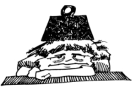

This page has usage examples for the following words:
depression 鬱病 うつびょう
depressed 塞ぎ込んでいる ふさぎこんでいる
irritated イライラしている
lost appetite, loss of appetite 食欲不振 しょくよくふしん
psychiatry 精神科 せいしんか
unstable 不安定な ふあんていな
unable to sleep 眠れない ねむれない
unable to concentrate on ～に集中できない 〜にしゅうちゅうできない

Since when has your husband started behaving out of ordinary?
いつ頃から、ご主人は変わりましたか。
いつごろから、ごしゅじんはかわりましたか。
That was about six months ago, when the company introduced computer system.
約６カ月前に、会社にコンピューターが導入されてからです。
やく ろっかげつまえに、かいしゃにコンピューターが どうにゅうされてからです。
Does your husband seem depressed?
ご主人は、塞ぎ込んでいるようですか。
ごしゅじんは、ふさぎこんでいるようですか。
He is very moody, alternately depressed and irritated.
気分が変わり易くて、塞ぎ込んでいるかと思うと、次にはイライラしています。
きぶんがかわりやすくて、ふさぎこんでいるかとおもうと、つぎにはイライラしています。
He is unable to sleep at night.
夜、眠れないようです。
よる、ねむれないようです。
A conversation between a patient and a doctor about depression
Patient:
My husband is having mood swings, irritated at one time and depressed at another. He has recently been promoted to a responsible position at his job. Is he under stress?
夫が最近、イライラしたり、怒りっぽいかと思えば、ふさぎ込んだりします。最近、職場で責任のある地位につきました。ストレスのせいでしょうか？
Doctor:
Stress-induced gastric ulcer and depression in middle age are well known. Now, as many jobs are changing to high-tech, workers in all ages seem to be under stress. Although employers began to take measures for mental health, there still is a conventional perception that mental diseases are something to be hidden from the public, hindering early treatment and delaying medical attention until the mental condition becomes serious.
ストレスから来る胃潰瘍、さらに、中高年の鬱病はかなり知られていますが、最近は職場のハイテク化に伴い、あらゆる年齢層で、ストレスを覚えるようになってきました。企業でも精神衛生対策を講じるようになってはきましたが、まだまだ、「世間体が悪い」といった、昔ながらの因習に妨げられて、初期のうちに治療を受けることなく、重症になって、やっと病院を訪れるというケースが少なくありません。
My two cents 一言おせっかい
Stress condition and depression are the manifestations of the mind’s load. Individual efforts only won’t provide a cure easily, but specialists are needed. Encouragement or denial is said to be counterproductive. A holiday trip for, a change, is not recommended, because it may only increase anxiety.
ストレス状態やうつ症状は、精神上の重荷が外に現れるわけです。個人の努力では容易に治せません。専門医に相談するのが一番でしょう。激励したり症状を否定するのは逆効果だといわれます。また、気分転換にと旅行に出たりすることは、かえって不安感を増大させるので勧められません。

[u01]
| © 1995-2013 NACOS International Institute. All Rights Reserved. |